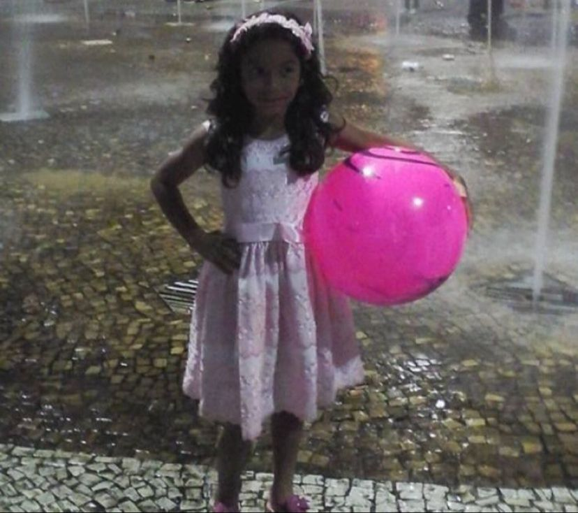
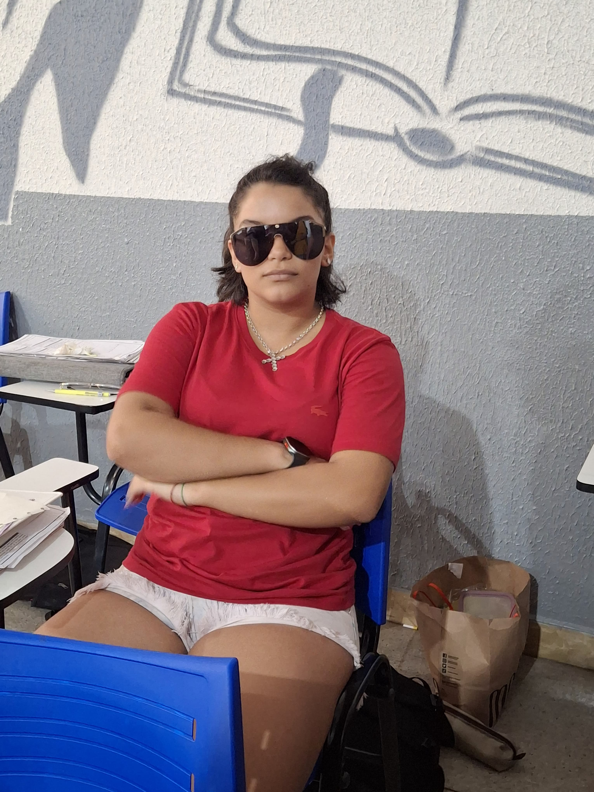

Marilia de Fátima
Marilia de Fátima Clemente da Costa (Imperatriz, Maranhão , 23 de março de 2008) é uma estudante brasileira. Possui 1,65 m de altura e calça tamanho 38. É destra e tem uma lancheira cinza. Atualmente, está em um relacionamento com Matheus Gabriel Barros Carvalho.
Marilia tem grande interesse por História, sendo sua matéria favorita, enquanto Química é a disciplina que menos gosta. Seu rendimento escolar não é o melhor da sala, mas também nunca é o pior. Usa seus "poderes mágicos" para sempre passar de ano e evitar preocupações para sua mãe, Amanda Franco Clemente, que trabalha como fotógrafa. Apesar de ser seu padrasto, Marilia tem um grande carinho pelo homem casado com sua mãe, tratando-o como um pai.
Nos momentos de lazer, Marilia prefere escutar Slipmami, uma das maiores artistas da indústria do rap feminino brasileiro. Além disso, carrega consigo uma Stanley falsificadona, que já virou uma de suas marcas registradas.
Com seu pezinho 38, Marilia anda pelas ruas de Goiânia ao lado de seu namorado e está sempre cercada por seus amigos mais próximos: Júlia, Gabriel, Karla, Giovana, Lorenna, João Pedro Gonçalves, Natã, Stephanie, Amanda, Karol, Sabrina, Sérgio, André, Pedro Nery, Tiago, Carlos Andrés.
Vida pessoal
Marília Clementina de Fátima nasceu no dia 23 de março de 2008, em Imperatriz, Maranhão, às 9 da manhã, em um domingo. Desde o seu nascimento, que foi considerado uma bênção por todos, ela trouxe consigo todo o sol que o Maranhão tinha a oferecer. Era tão radiante que, em suas fotos de criança, as câmeras não conseguiam captar toda a luminosidade, resultando em um efeito único nas imagens.

Aos 4 anos de idade, Marília se mudou com sua família para Goiânia, Goiás, onde sua vida realmente começou a ganhar novos rumos. Hoje, ela é reconhecida como uma das mulheres mais lindas de todo o Centro-Oeste e Nordeste. Com cabelos escuros e ondulados e sua pele escura, como um bolo de chocolate, Marília cresceu em Goiânia, onde reside até hoje. Na cidade, ela construiu uma vida cercada por milhares de companheiros e mantém um relacionamento duradouro e feliz.
Marília vive de forma plena, com pessoas que a apoiam a todo momento, e é grata pela vida que leva, cercada de amor e companheirismo.
Carreira
Ao longo de todo o seu ensino médio, Marília atingiu grandes feitos na vida escolar, entre eles, tirar 940 na redação do Enem. Porém, engana-se quem acha que a vida dela se resume apenas a sucessos acadêmicos. Confira abaixo outras conquistas:
Maiores feitos
Momento fofo <3
Gabriel
Querida Marilinha, Feliz aniversário menina do pé preto, mesmo sendo um pé no saco consegue ter o coração mais puro que eu conheço, muito difícil te ver triste já que todos os dias você vem para perto da gente para alegrar e ser luz enquanto tudo na nossa vida parece só escuridão, que venham muitos anos e muitos mais peixes em sua vida, nosso presente não é um simples peixe, é um símbolo que você está amadurecendo e virando uma mulher e com a vida vem as responsabilidades (o peixe) que você vai ter que cuidar com muito amor e carinho para mantê-lo vivo, e como a Dory disse: "Continue a nadar, pequena gafanhota".
Júlia
Feliz aniversário minha querida amiga Marília, que seu dia seja imenso de muito amor e felicidade (principalmente o meu hahaha) e que sua vida mais futura seja imensa de oportunidade e amizades．E ESPERO QUE TENHA GOSTADO DO MEU PRESENTE E DO GABRIEL, FOI DE MUITO AMOR E CARINHOOOOOO． Beijos linda, te amo! 😘😍😍
Natã
Marília, eu vim me aproximar de você faz pouco tempo, mas, todos os momentos que eu compartilhei até agora com você foram bons e memoráveis. Você é uma garota engraçada, você é uma garota sola e, principalmente, uma pessoa feliz, que consegue deixar qualquer momento mais leve. Não é difícil dizer que você é uma pessoa especial na minha vida, tá? Obrigado por deixar meus momentos mais alegres, nós te amamos!
Karol
Parabéns, Marília!! Que seu dia seja incrível, te desejo tudo de bom nesse novo ciclo. Você merece tudo de melhor hoje e sempre!
Stephanie
Oii Maríliaaa, feliz aniversárioo!! Que Papai do Céu te abençoe, que esse seu novo ciclo seja repleto de realizações. Você é uma pessoa maravilhosa, e eu sou muito grata por ter você na minha vida! Aproveita muitão seu dia, te amoo! 💗
Giovana
Depois de ter mudado de escola, percebi o quanto era grata por sua amizade. Quando estava no colégio Ânus, nós sempre andávamos juntas. Entrei em desespero pensando que nossa amizade poderia acabar, mas, graças a Deus, isso não aconteceu e eu continuo podendo ter sua presença, que me deixa tão feliz. Te amo, Marília, mesmo você sendo maranhense! ❤️❤️❤️
Amandha
Feliz Aniversário! Que cada dia seja repleto de amor, risadas e conquistas. Aproveite cada momento deste aniversário e saiba que estarei ao seu lado, torcendo por você sempre! Um beijo enorme e um abraço apertado! 💖
Karla
Parabéns, Marília! Aproveita bastante o seu dia, te desejo tudo de bom e agradeço muito por todos os momentos. Amo você, lindona! 🩷
Sabrina
Feliz vida, gatita! Sua energia alegre ilumina qualquer ambiente, obrigada por esse seu jeitinho tão especial de ser. Aproveita seu dia, princesa! Conta comigo sempre! ❤️
Lorenna
Feliz aniversário, Maríliaaaaaa!!!! Saiba que você é uma pessoa incrível e eu desejo que essa nova fase na sua vida seja repleta de conquistas e felicidade. 🤍 Continue sendo essa pessoa alegre que você é e que deixa os dias tediosos na escola muito mais animados KKKKKKKKK Pode contar comigo sempre, beijo gatinha! 🫶🏻
Carlos
Oi, Marília!! Eu sou péssimo com textos, mas queria que você soubesse que gosto muito de você, mesmo que não pareça pelo tanto que te irrito kkkkk. Aproveite muito seus dias de vida da maneira que está aproveitando hoje, porque você merece! E eu espero que você esteja emocionada lendo isso agora Kkkkk beijos, garota!
J.P. Gonçalves
fala guria hoje você completa mais um ano de muitos; espero que nunca te falte saúde, grana e paz. você é uma pessoa muito massa, espero que nunca perca isso. feliz aniversário 🥳